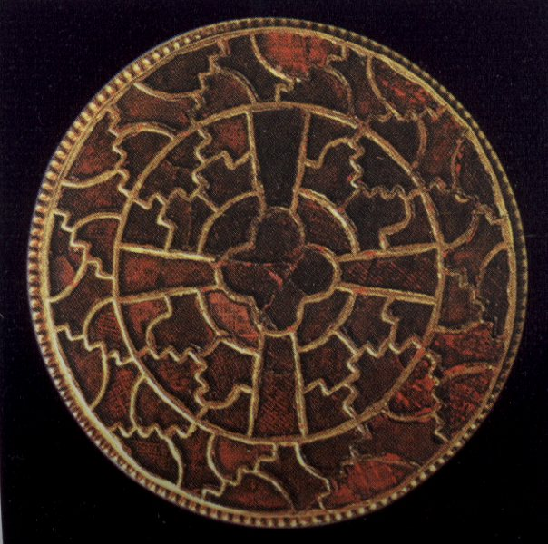

Debate: The
Conversion of Clovis
Proposition: Clovis
converted to Christianity because of a battlefield miracle
Remember: you will be called upon to
answer at
least one of the questions as part of the debate; you may (should) also
take
part in other parts if you have things to say that differ from what
your
teammates have said.
Debate:
Team 1:
argue for the Proposition
Team 2:
argue against the Proposition
Assigned
questions - Team 1:
1. Background
- Who were the Franks? Who was Clovis? Where did they/he come from?
2. Background
- What did Clovis do in the
course of his reign?
3. Background
- Who was Gregory of
Tours? What is his History about and when was it written?
4. Presentation
of the proposition: what is the topic? what is the basis of your argument?
5. Arguments
- select one significant
sentence from the primary sources that favors your side, and explain
what it
means
6. Arguments
- select one significant
sentence from the primary sources that favors your side, and explain
what it
means
7. Arguments
- select one significant
sentence from the primary sources that favors your side, and explain
what it
means.
8. Do
the summary, summarizing your team's
arguments and state why they are preferable (you can't do this ahead of
time).
Assigned
questions - Team 2:
1. Background
- Who were the Arians around
the year 500? Where were they
based? (Dr. Deliyannis will bring a map of Europe c. 500).
2. Background
- Who exactly was Clothilda? What was her
role in Clovis'
conversion?
3. Background
- Who was Avitus of Vienne?
4. Presentation
of the proposition: what is the topic? what is the basis of your argument?
5. Arguments
- select one significant
sentence from the primary sources that favors your side, and explain
what it
means
6. Arguments
- select one significant
sentence from the primary sources that favors your side, and explain
what it
means
7. Arguments
- select one significant
sentence from the primary sources that favors your side, and explain
what it
means.
8. Do
the summary, summarizing your team's
arguments and state why they are preferable (you can't do this ahead of
time).
Primary source
evidence
Primary sources
related to Clovis'
conversion can be found here; do look at the comparative material,
including
Bede's account of the Conversion of England and Eusebius' account of
Constantine:
http://www.fordham.edu/halsall/source/gregory-clovisconv.html
http://www.fordham.edu/halsall/source/496clovis.html
The other main primary source about Clovis' conversion is the letter of Avitus of Vienne to Clovis, which I have posted on Oncourse. Actually this PDF file contains some background about the conversion, as well as some other texts and documents about Clovis (including the selections from Gregory of Tours listed above).
Links to information on the conversion of
Clovis
There is a lot of junk on the internet! Unfortunately, there is almost nothing out there that provides reliable information about the baptism of Clovis. Instead, I recommend that you look at at least one of the following recent articles about this event (you may, of course, look at both) to help you understand the material and make up your mind about your argument:
William Daly, "Clovis: How Barbaric, How Pagan?" Speculum 69 (1994): 619-664, read pp. 637-641 (you are of course welcome to read the rest of the article, too!)
Danuta Shanzer, "Dating the baptism of Clovis:
the bishop of Vienne vs the bishop of Tours," Early Medieval Europe 7 (1998): 29-57,
read pp. 50-57 (again, you are welcome to read the whole article) - on Oncourse
Finally, one other
good text on
Clovis' conversion is Richard Fletcher's The Barbarian Conversion
from
Paganism to Christianity (Univ.
of
California Press, 1997), pp. 97-129.
I have put pp. 100-107 on Oncourse.